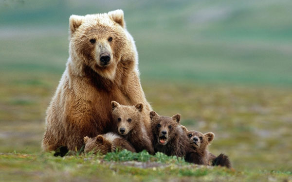

Potomstwo
W trakcie rui, trwającej 10-30 dni, samica kopuluje z wieloma samcami. Okres rozrodczy trwa od maja do lipca. Porody odbywają się od stycznia do marca, po ciąży trwającej 180-266 dni. Młode po narodzeniu ważą 340-680 gramów. W wieku 6 miesięcy ważą około 25 kg. Okres laktacji trwa do 30 miesięcy, jednakże już 5-miesięczne młode mogą żywić się innym pokarmem. Stają się samodzielne w wieku co najmniej 2 lat. Mogą się rozmnażać po 4-6 latach.
Przeciętnie rodzi się od 2 do 3 małych niedźwiedzi. Z przeprowadzonych kilka lat temu badań wiemy, że poród następuje podczas snu zimowego, przeważnie jest to okres pomiędzy grudniem a lutym. Okres zimowy nie jest jednak zbytnio przyjazny dla młodych. Pierwsze półtora miesiąca życia są dla nich okropnie ciężkie, najbardziej doskwiera temperatura. Na szczęście z pomocą przychodzi matka, która tuląc potomstwo zapewnia im przetrwanie. W niewoli niedźwiedź brunatny może dożyć nawet 45 lat. Jednak na wolności przeciętny samiec dożywa około 25 lat.